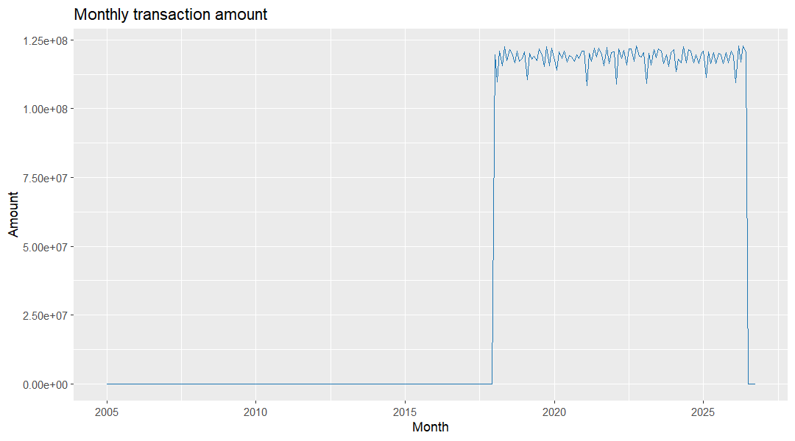
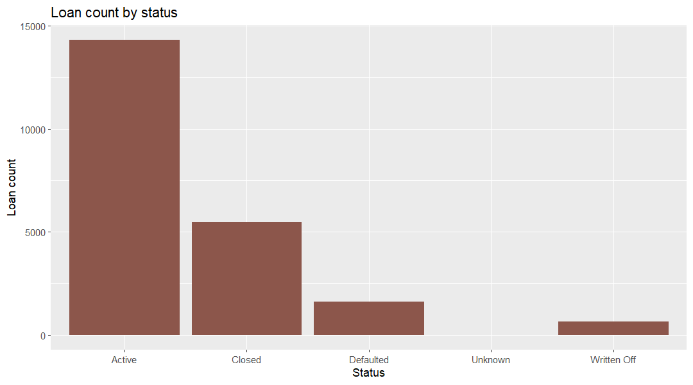
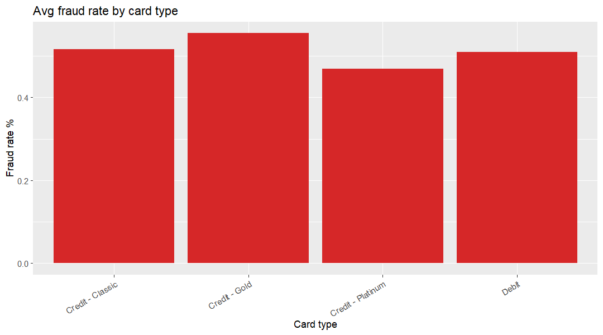

Transaction value is mildly concentrated
The top 10% of active customers hold 22.55% of transaction value; an even split would be 10%.

Insight index →
MySQL banking_core_db, MongoDB
banking_support_db and Databricks
public land in PostgreSQL raw through
contracted, watermarked PySpark extracts. Stored procedures build
staging, analytics and
marts; only published marts reach Databricks Delta.
Airflow schedules the run and audit.* keeps the
evidence.
Airflow schedules main.py, PySpark moves the data,
SQL procedures transform it and the publisher only copies marts.
Dots show data moving; click any stage to see who owns it.
The log and step states come from
audit.fn_pipeline_summary,
audit.fn_table_runs and
audit.fn_dq_summary: a snapshot taken when the app
renders. Production runs at
0 2 * * *
Asia/Kolkata, catchup=False, one active run at a time.
Each square is one table, loader or model. One owner writes each
schema, main.py calls the next layer only after the
previous DQ gate passes, and nothing outside its owner ever writes
to it.
Airflow adds scheduling, retries, pools and alerting. It holds no
pipeline logic of its own: every task is a
main.py --only <step> call.
banking_delta_daily —
0 2 * * *
Asia/Kolkata
banking_watchdog — every 3 hoursbanking_report_weekly — Mondays 08:00audit.pipeline_runs row
python main.py runs the whole gate order--list, --from,
--only for partial runs
--keep-going
Consumers stay read-only: the Streamlit dashboard, the R layer and
the LaTeX reports only ever SELECT from the published
Delta marts.
A replay of one daily batch. Rows, tests and checks fill in as each stage finishes, and the glowing dot marks where the batch is now. Click any stage to see what the same record looks like there.
Row counts and the sample record are illustrative. Contract, layer
and check counts come from the repository. When the Streamlit host
serves this page, the run log in the hero shows real
audit.* data.
A failing DQ gate blocks publish. Only transient connection failures are retried, and the verdict is committed before the check raises, so the reason survives the rollback.
make contracts
NUMERIC(18,2) /
Decimal end to end — never float.
COMMITted before the check RAISEs.
audit.pipeline_errors are
classified and secret-redacted.
SELECT.
make help is the authoritative command list.
Targets that touch real sources need explicit confirmation.
make install
make contracts
make lint
make testmake load-raw-csv
make staging
make analytics
make marts
make dqmake daily
make publish
Start Airflow with make up; the UI is at
localhost:8080.
Regenerated from the published marts with
make report. Full analysis, including segment views
and a "so what" line per finding, is in
docs/INSIGHTS.md.
The top 10% of active customers hold 22.55% of transaction value; an even split would be 10%.

Insight index →
12.01% of
600,005 recorded
loan payments are late, straight from
marts.mart_loan_portfolio.

Insight index →
0.499% of
28,608,185.59 in
flagged card transactions — see
marts.mart_card_fraud.

Insight index →